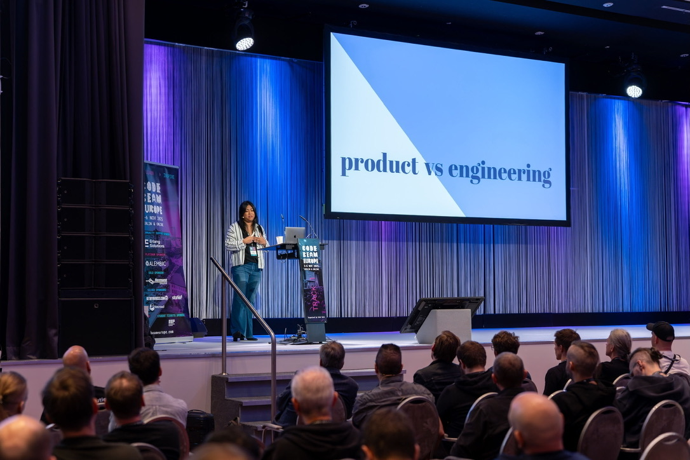
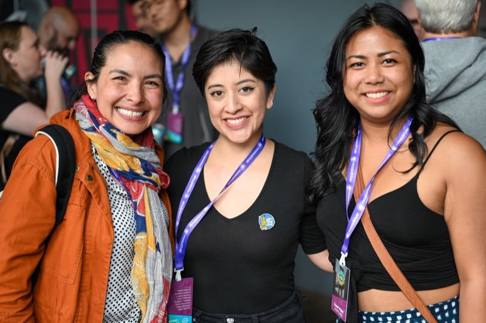
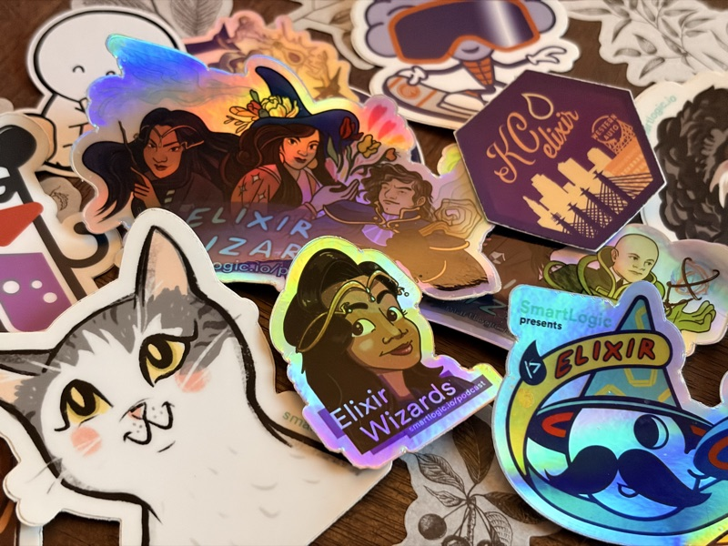

About
Engineering manager, Elixir community speaker, podcaster, and team builder. I've spent 10+ years shipping high-traffic consumer products across automotive, travel, and restaurant industries, and 5+ years leading the web and mobile teams behind them. I thrive on teams that are down to chat about good code, great coffee, and who get infinitely distracted by pets on the screen.
- Elixir Wizards podcast
- Maryland, USA (Remote)



Expertise
Multi-Team Leadership
Leading across multiple teams is a lot like hosting a big dinner: everyone's working on something different, and my job is making sure it all comes together at the same table. I've worked with engineers at every stage, from folks in their first role to Staff and Principal Engineers, and each group needs something a little different from a manager. For senior engineers, that usually means context over control. I've also led fully remote teams for years, and I've learned that connection doesn't happen by accident; you have to build it on purpose.
Coaching & Career Growth
Watching someone grow into their next role is hands-down my favorite part of the job. I'm a big believer that growth conversations shouldn't wait for review season, so they're a regular part of how my teams work, along with mentorship, learning days, and lightning talks. I love seeing people take on something a little scary and come out the other side more confident. I've even given a conference talk on career advancement for engineers, because it's a topic I could talk about all day.
Cross-Functional Alignment
Great products come from Engineering, Product, and Design working as true partners, not as a relay race. I like bringing people into the conversation early, keeping trade-offs out in the open, and making sure everyone feels heard before decisions get made. It's less glamorous than shipping features, but it's what makes shipping possible. When the roadmap makes sense to everyone who depends on it, that's a good day.
Developer Productivity
I think about developer productivity as removing the friction that keeps engineers from their best work, not squeezing more output out of people. That might mean better tooling, clearer processes, or rethinking how we measure growth so it reflects the whole picture rather than a single number. I've gotten especially interested in how developer-experience data can make performance conversations fairer and more grounded. The goal is simple: work should never feel like a slog.
Platform Migrations
Big migrations are as much about people as they are about code. When you're changing a system that lots of teams depend on, the hardest part is keeping everyone's trust while the ground shifts beneath them. I've led one of these from start to finish, and my favorite outcome was seeing other teams build on the foundation we created. I liked the human side of that story so much that I gave a keynote about it, “Empathy in Engineering,” at Code BEAM Europe 2025.
One Team, Every Platform
Some of my favorite work has been leading teams where web, iOS, and Android engineers sit side by side, shaping features together from the very first conversation. I've seen the alternative too, where mobile is the last stop and features arrive months after web, and it's no fun for anyone, especially users. With the right architecture and the right habits, a single change can launch on every platform at once, and the whole team gets to celebrate together. Watching engineers from different disciplines learn from each other and find their groove is one of the most rewarding parts of my job.
AI & Agentic Workflows
AI has made the engineering toolbelt a whole lot wider, and I've loved exploring what's possible with my team. Rather than chasing “10x” headlines, I'm most excited about handing AI the tedious work, like cleaning up old code or triaging bugs, so people can spend more time on the interesting problems. I try to encourage a “what if…” curiosity, where anyone can try out an idea for a new tool. Some of our favorite quality-of-life improvements started that way.
Elixir Community
Elixir has been a big part of my career, from building products in it to hiring and growing teams that love it as much as I do. Somewhere along the way, the community became just as important to me as the language. I am a co-host on the Elixir Wizards podcast, where I've had the chance to interview a ton of incredible guests, and I've spoken at conferences like ElixirConf and Code BEAM, including a keynote in Berlin. I've also organized the DC Elixir Meetup and emceed a variety of Elixir conferences.
Experience
-
I lead the Core Shopper Experience team behind Cars.com's Vehicle Details Page, the heart of the car-shopping experience for buyers and dealers alike. We rebuilt it on a Server-Driven UI architecture powered by Elixir, so one change now ships to web, iOS, and Android at once, getting features out 3x faster. I also championed AI tooling and agentic workflows that tripled our delivery speed and sparked internal tools now speeding up teams across the company. Along the way I keep the team growing and shipping, and take my turn as incident commander when production needs a steady hand.
-
I started out building custom web and mobile apps for clients in Elixir, Flutter, and React Native, then got promoted to lead the engineering team. As a manager, I guided the careers of engineers spread across multiple client teams and tech stacks, and kept a busy slate of concurrent projects shipping on time. On the mic, I co-hosted the Elixir Wizards podcast, chatting with nearly 100 guests across tech communities.
-
I was part of the team building CAVA's digital ordering experience for restaurants nationwide, contributing to the Elixir backend APIs that power it. On the front end, I helped ship fast, polished features in Phoenix, React, and React Native across web, iOS, and Android. Working hand in hand with Product and Design, our team brought real-time ordering features to life, built to scale.
-
I built a kiosk-based React prototype that reimagined the in-store checkout flow for a major U.S. retailer. Collaborating with Product, Design, back-of-house engineering, and QA, I helped turn the concept into a working proof of concept delivered to the client.
-
I was part of the team that built Upside's post-purchase experience, bringing detailed UX mockups to life so travelers could view and manage the trips they'd booked. Behind the scenes, I helped maintain the backend services that kept trip data consistent across web, iOS, and Android.
-
I led a small engineering team on Jibe Apply, Jibe's flagship product, building custom-branded, white-labeled job application experiences. Our work went out to dozens of Fortune 500 clients, each with its own look and feel.
Speaking
-

Empathy in Engineering
Explored the human side of Cars.com's Server-Driven UI architecture migration — unifying feature delivery across web, iOS, and Android — and how team collaboration and empathy shaped the outcome of a high-pressure technical transformation.
Watch on YouTube -

A Practical Guide to Career Advancement for Elixir-ists
Delivered a talk on career growth for senior engineers, covering delegation, mentoring vs. coaching, and how to earn technical influence within a team and organization.
Watch on YouTube -

The Alchemy of Elixir Teams: An Engineering Manager's Tale
Presented on managing Elixir engineering teams — covering team communication styles, delivering feedback using the Situational-Behavior-Impact model, and balancing technical ambition with team productivity.
Watch on YouTube -

Stunt Doubles: Testing with Mox
Presented best practices for using Mox in Elixir test suites, covering how to design effective behaviours for accurate mocking and maintainable, easy-to-follow test coverage.
Watch on YouTube -

A Fireside Chat on Adopting Elixir
Discussed key considerations for organizations adopting Elixir, from team readiness to long-term technical tradeoffs, in a fireside chat format.
Watch on YouTube
Education & Awards
Education
B.A. in Studio Art
University of Maryland, College Park
2015
Digital media focus, blending code, visual design, and user experience.
Awards
RealLIST Engineers 2020
Technical.ly
2020
Named one of 16 influential technologists building the DC tech community.
Contact
Have a question, an opportunity, or a speaking invitation? Send me a note here.